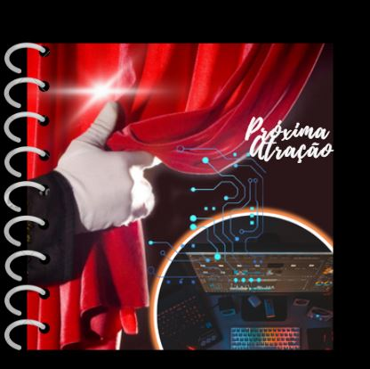

Iniciando no mundo de DEV
Me chamo Danilo! Sou iniciante na área de programação. Estou tendo um pouco de dificuldade, mas com muita perseverança e persistência creio que irei conseguir me desenvolver na área.
Fiz essa página em cima da página da Milena, instrutora da Alura, sei que estou apenas adaptando-a, mas está sendo muito útil para entender o processo e dar esses primeiros passos!
Tudo na programação é novo pra mim. Mas aos poucos e com essas instruções incríveis que estou recebendo na ALURA, vou me superando a cada dia!
💪
Curiosidades sobre mim:
- Gosto de aprender
- Não gosto de estudar
- "Apaixonado" pelo teatro
- Curto desenho animado
- Sou engraçado
- Evangélico
- Amo fazer amizades
- Gosto musical eclético